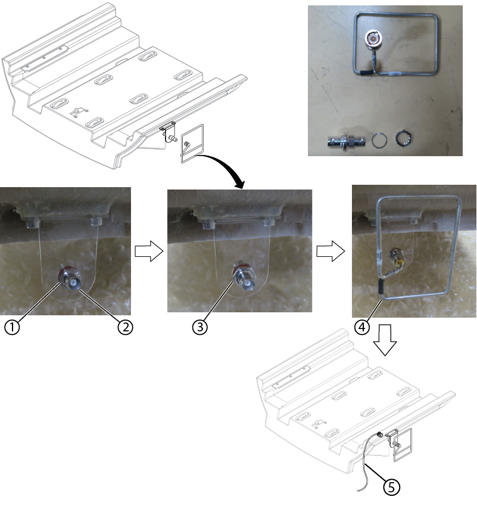

Installs the rear bridge onto the magnet as part of the initial system installation.
Prerequisites
Procedure
- Install the rear bridge onto the guide pins at the rear of the front bridge.
- Install the two flange bolts to secure the rear bridge to the rear bridge mount and install the caps.
- Route cable M3507 cable under the rear bridge and connect it to end of the travel switch.
- Install Universal Transient Noise Suppression (UTNS) antenna as follows:
- Insert BNC adapter through the bracket hole and install washer.
- Install the nut securing the BNC adapter.
- Connect the UTNS antenna to BNC adapter.
- Route cable M1315 under rear bridge and connect BNC connector to UTNS antenna assembly.
Figure 1. UTNS antenna installation

| 1 |
Washer |
| 2 |
BNC adapter |
| 3 |
Nut |
| 4 |
UTNS antenna |
| 5 |
Cable M1315 |